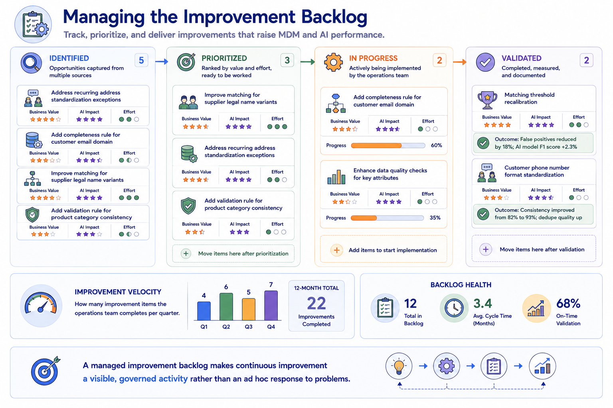
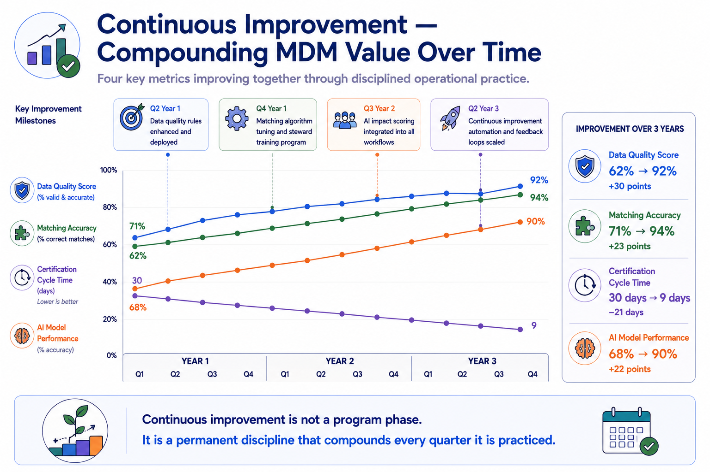

Continuous Improvement
Module support notes
The Improvement Backlog
A managed improvement backlog transforms continuous improvement from a vague organizational aspiration into a visible, governed activity with defined priorities and measurable velocity. Without a backlog, improvement work competes invisibly with operational maintenance and consistently loses — because operational urgency always feels more immediate than improvement opportunity.
With a backlog, improvement items are captured, prioritized, and assigned to defined quarters alongside operational commitments. The backlog also provides executive-level visibility into the improvement program — making the case for operational investment by showing not just what the operations team is maintaining, but what it is actively making better.
Tip
Rate every backlog item against two dimensions before prioritizing: business value and AI impact. Items that score high on both get the earliest slots in the improvement queue. Items that score high on one get sequenced after. Items that score low on both get deferred until capacity allows. This two-dimension rating prevents improvement work from being dominated by technically interesting but low-impact changes that leave high-AI-impact problems unaddressed.

AI-Driven Quality Improvement
AI capabilities are increasingly being applied within MDM operations to improve the quality and efficiency of the MDM program itself — not just to power the AI use cases that consume MDM outputs. Predictive exception detection uses ML models trained on historical exception patterns to identify records likely to generate future exceptions before they enter the governance workflow. Survivorship optimization uses AI analysis of historical field accuracy data to identify which survivorship rule configurations consistently produce the most accurate golden record field values. Matching threshold optimization uses AI to find the configuration that minimizes both false positives and false negatives for a specific domain's data characteristics.
Organizations that apply AI within their MDM operations program create a virtuous cycle — better MDM operations produce better AI training data, which enables better AI models, some of which improve MDM operations further.
Note
AI can be applied to improve the quality of MDM operations — not just to consume the data MDM produces. The three highest-value applications are predictive exception detection, survivorship optimization, and matching threshold optimization. Each addresses a different quality improvement lever, and together they shift the operations program from reactive problem-solving toward proactive quality management that prevents issues before they reach the governance workflow.
![Three AI-assisted improvement capability cards. Predictive exception detection: an ML model trained on historical patterns predicts which records will generate exceptions in the next 30 days, enabling proactive remediation. Survivorship optimization: AI analysis of historical accuracy identifies which survivorship configurations produce the most accurate golden records per field type. Matching threshold optimization: AI identifies the threshold configuration that minimizes both false positives and false negatives for each domain.](../assets/m9-ai-driven-improvement.png)
Continuous improvement is not a program phase — it is a permanent discipline that compounds every quarter it is practiced, raising the quality floor that AI systems depend on.
